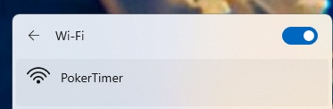
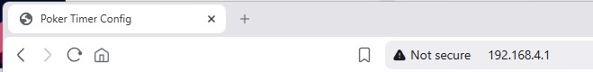
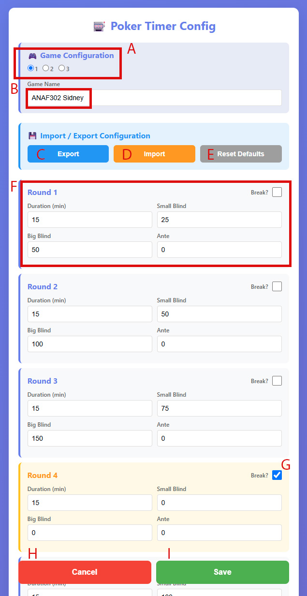

The Poker Timer stores up to 3 games, each with up to 25 configurable rounds — blinds, antes, and breaks — with automatic level advancement. The schedule is set through a web page served by the device itself: no apps, no account, nothing to install.

Put the timer in access-point mode (see Device Instructions, Step 5) and open your phone or laptop's Wi-Fi settings.

Open any web browser (Chrome, Safari, Firefox) and type the device address into the address bar:
The page has everything you need to build and manage your blind schedule. The letters below match the markers on the screenshot. Each game supports up to 25 rounds — the screenshot shows the first four; scroll down the page to reach the rest.

Configuration page — the letters match the descriptions below.
The device stores 3 games. Pick slot 1, 2, or 3 to edit that game.
Name the game. This is what appears on the power-on screen in Standalone and Master modes.
Saves the schedule to a JSON file. Handy when you need more than 3 games, or want to copy the same schedule onto multiple devices.
Loads a previously exported JSON file back into the device.
Restores the factory default settings for the selected game.
Enter the round Duration (min), Small Blind, Big Blind, and Ante for each round.
Check this box to make a round a break instead of a play round.
Floats at the bottom of the screen, always visible while you scroll through the rounds. Reboots the device without saving any changes.
Floats at the bottom of the screen beside Cancel. Reboots the device with all changes saved.
When you're happy with the rounds, tap Save. The device reboots with the new schedule.
See the Device Instructions for powering on, changing modes, and putting the timer into access-point mode.